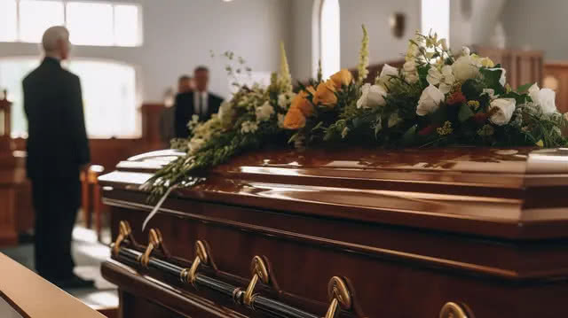

Comprometidos con acompañar a las familias en los momentos más delicados con respeto, empatía y humanidad.
Funeraria Paz y Descanso nace con la firme convicción de brindar un servicio integral y humano. Sabemos que la despedida de un ser querido es un momento difícil, y por ello acompañamos a cada familia con respeto, orientación y total dedicación.
Hemos conformado un equipo con más de 10 años de experiencia en servicios funerarios, gestión de trámites y atención profesional basada en valores éticos y empatía humana.
Brindar servicios funerarios con calidad, responsabilidad y cercanía, garantizando tranquilidad y confianza para quienes atraviesan momentos difíciles.
Ser reconocidos como una de las funerarias de mayor profesionalismo, humanidad y garantía en el país.
Director general
Coordinación de servicios
Trámites administrativos
Organizador de eventos
Contador financiero
"Un servicio impecable, nos acompañaron y orientaron en cada paso. Gracias por todo."
- Familia de López"Muy respetuosos y organizados, hicieron de un momento difícil algo más llevadero."
- Familia Martínez